Apploi Consumer Web 2.0
After revamping Apploi’s enterprise dashboard, it was natural that we rethink our consumer-facing product, which comprises of our job search mechanism and the application process that job seekers use to apply to those jobs.
The business challenge was to get more people to use the system and increase the chances of these users getting hired. If we create a better mechanism that can feed our supply-side (the companies looking to hire workers in service industries), we create a healthier ecosystem that helps more people get jobs.
Apploi’s differentiator is users can answer video, text, and multiple choice questions directly through the application, enabling them to showcase their personality while also making the screening process more effective and efficient for both job seekers and hiring managers.
Our goal as a team is to build this application process from the ground up, enhancing the overall user experience, creating a new visual language, and thus making what’s usually an anxiety-filled process to be easier, faster, and more enjoyable to use than the status quo and other competitors in the market. It would be called Project Churchill.
ANALYZING THE OLD APPLICATION
Before any new design work was done, we analyzed the status of the current product, did usability tests on new and existing users, while also trying to gain as much context regarding other products in the same field.
The old product could use a major lift from both an aesthetic and a usability standpoint. It lacked consistent styling, didn’t adhere to a user-friendly grid, and users had issues mapping where they were on an application or how far they still had to go to finish one. Still, this same product was able to get a ton of people to apply to jobs. It was our goal to dramatically increase success rates and repeat usage of the app.
Basic Information
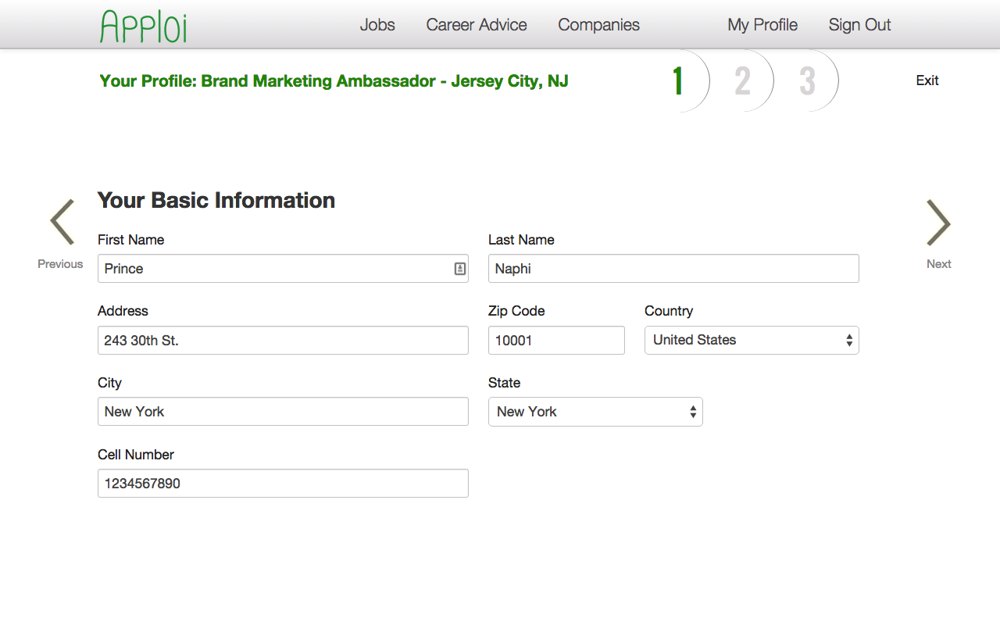Work Experience
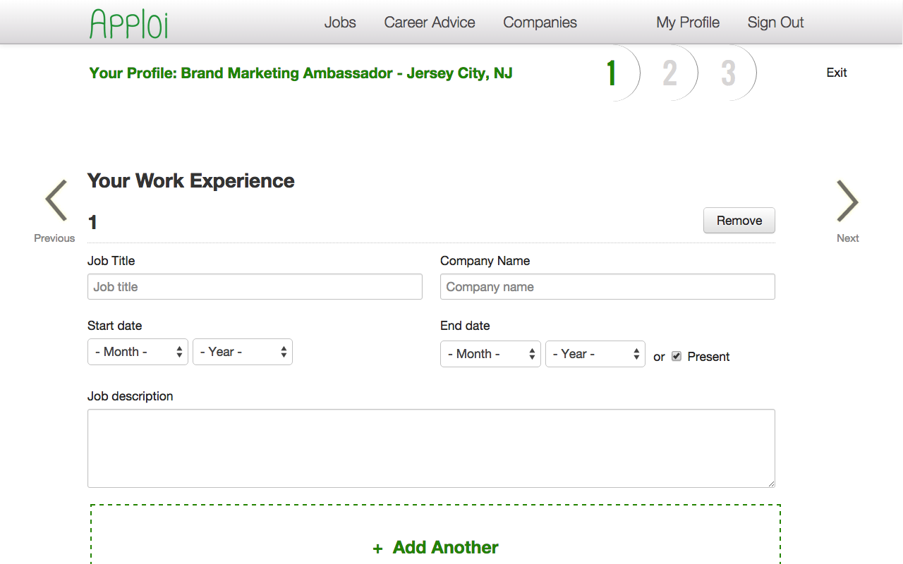Adding Material
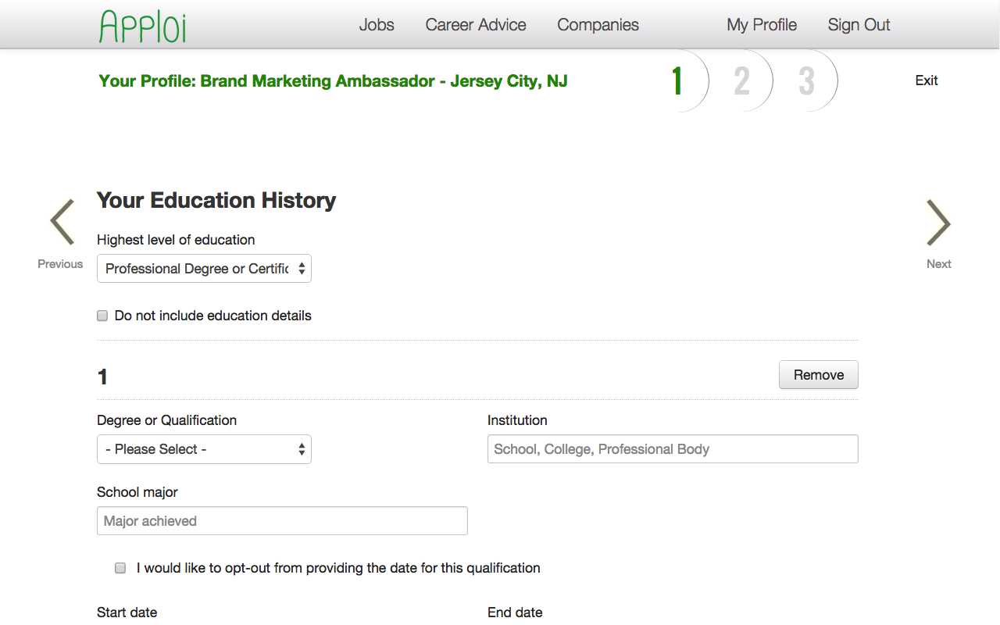Filling Out Basic Information
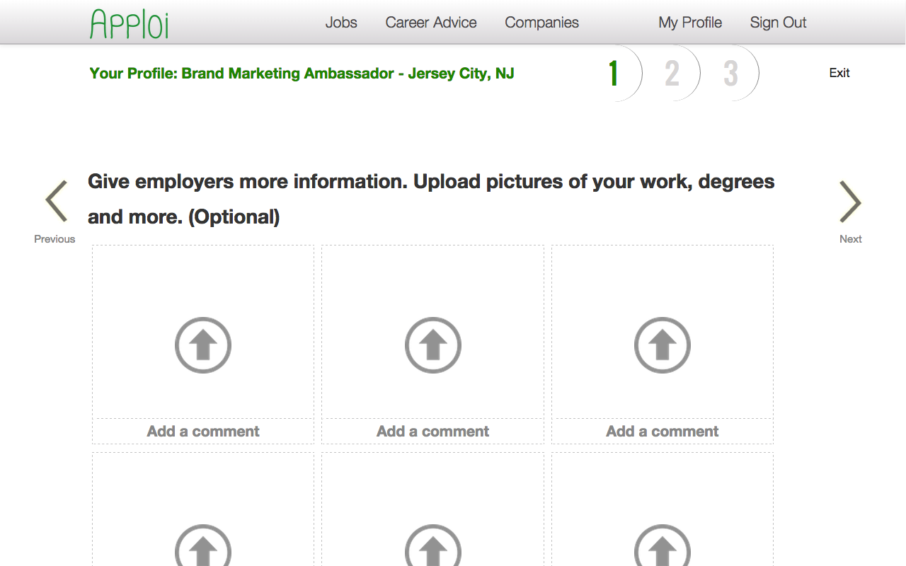Answering Video Questions
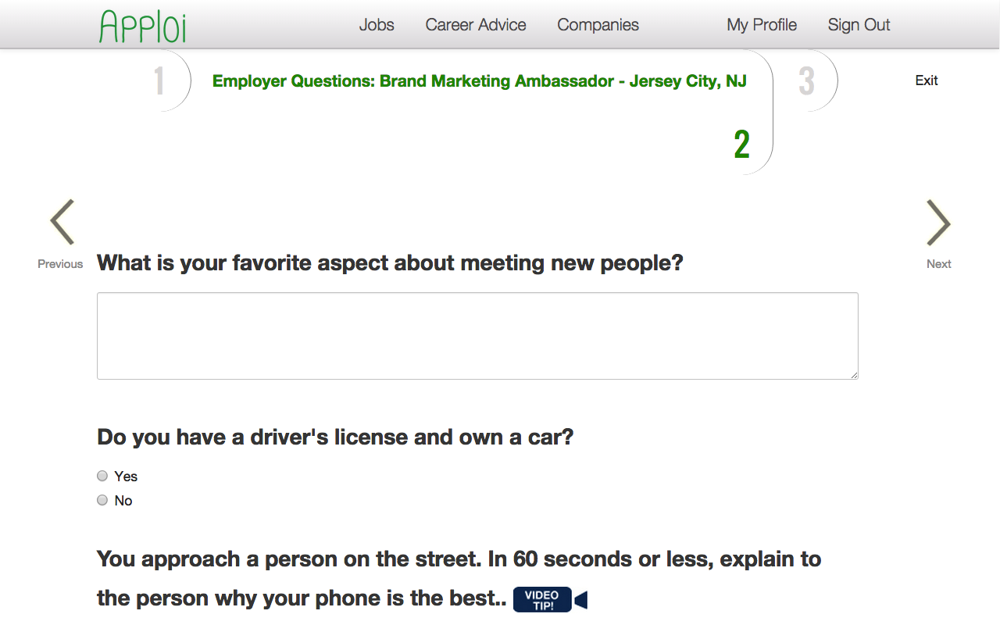Editing User Profile
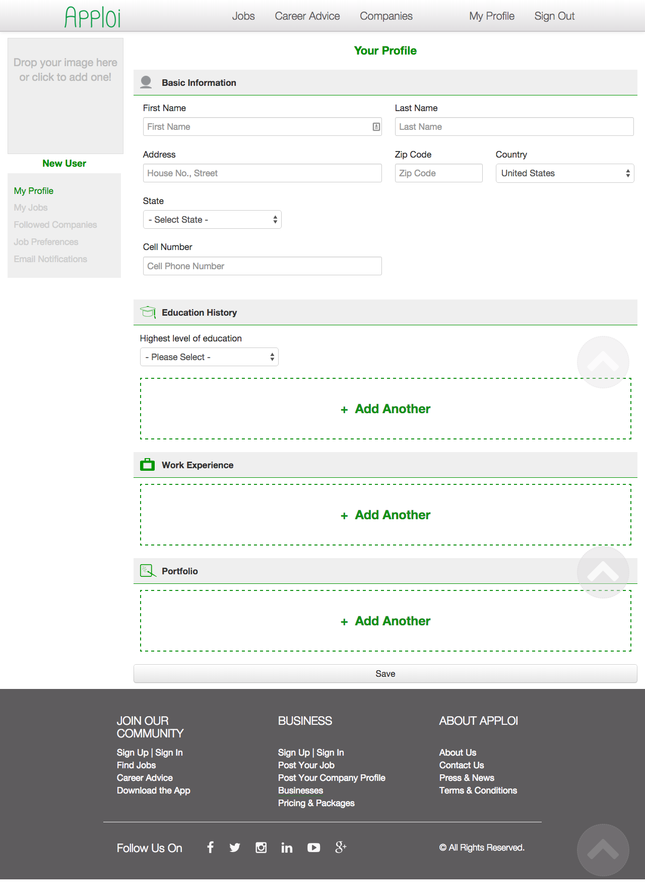We had a big challenge ahead of us, but what made it exciting is we had the leeway of envisioning a new product.
Doing a Design Sprint

We opted to do Google Venture’s design sprint which helps teams answer crucial business questions through design, prototyping, and user testing in one business week (five days).
We asked select people from each department to participate in the sprint so we could get as many diverse perspectives and context about what we were going to build. While the product team will be in charge of designing each iteration, we wanted the end concept to very much be a solution that reflected the company.
Defining the core problem to address
On the first day we had a structured discussion that would define our end goal of the project. We also tried to get everyone to share what they know or what pain points they experienced in their roles that could be addressed in the product. We then decided what target problem we were attempting to solve in a week.
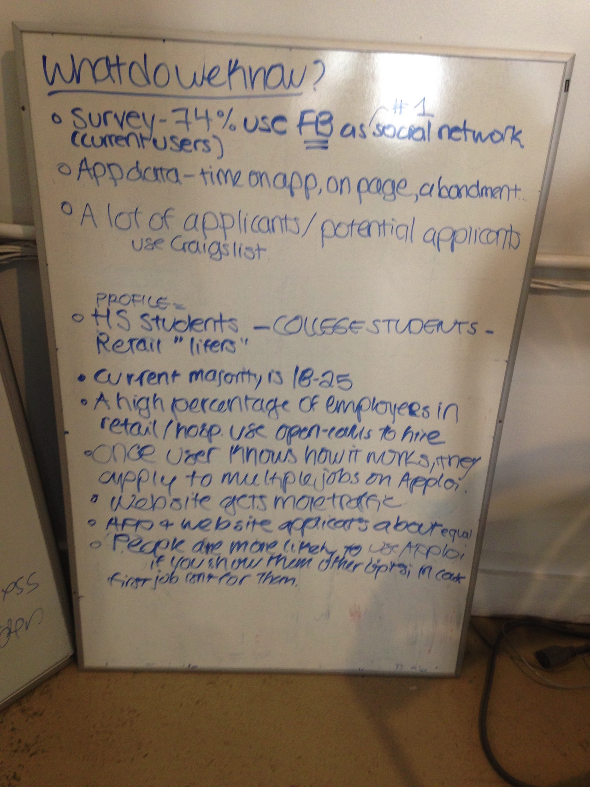 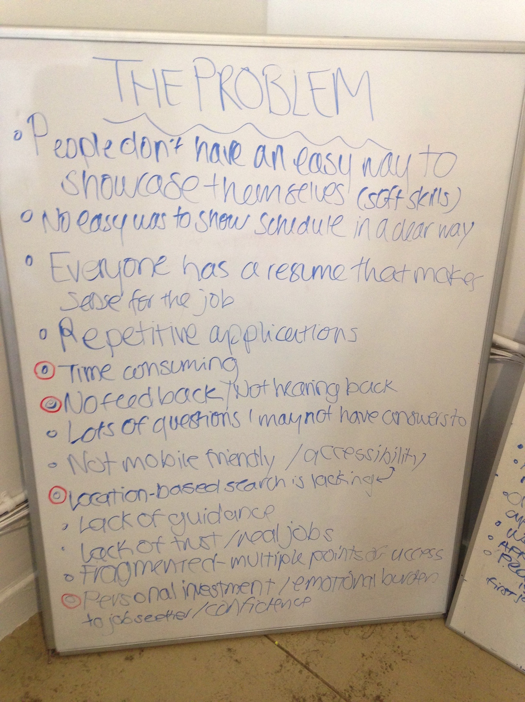 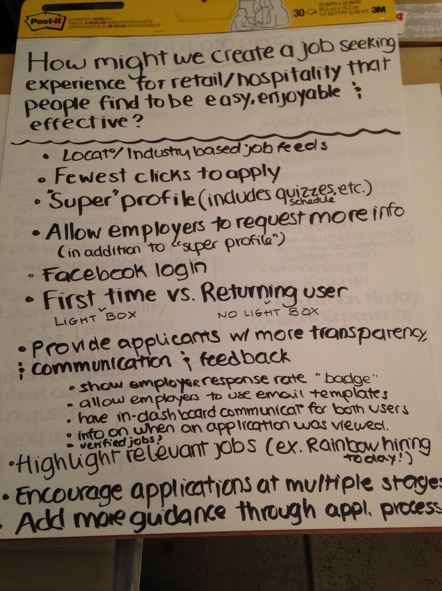The biggest pain points with the existing process, both in our product and adjacent competitors in the market, were:
- it’s very dense and overwhelming to parse
- it’s time-consuming, and often the return of investment in that time spent is not clear
- it’s a repetitive experience from job to job, which can be annoying and exhausting
- there’s lack of feedback or communication post-submission
- people don’t have an easy way to communicate their soft skills—which is often what’s needed in our target market
- steep drop-off rate after starting an application
- users churn; instead it would be a win-win if they can instantly apply to another job after submitting one
We settled that our target event was the application process in itself. While we would start thinking about the entry points and exit points, our biggest challenge for the sprint was how someone fills out the application, and that we would focus mostly on the application flow. By doing so, we improve conversion rates (percentage of submitted applications) and repeat usage, which enhances the chance that they would be hired by our clients.
Some abstract ideas that surfaced:
- Reduce the time it takes to fill out a profile for the first time
- Create modules for employer questions that are more digestible
- Be able to both show progress level and inspire completion
- Make it as engaging as possible
Drawing out solutions
We reviewed the concepts we unpacked the day before. We did lighting demos of existing solutions from other companies to get a better sense of how others tackled the problems. We looked at competitor products, and we also looked at apps that were outside our industry. This helps get inspired for the next step.
We took notes down to generate ideas. Then we moved to Crazy 8s which was folding a piece of paper into 8 pieces and sketching out multiple alternatives. Then we each did solution sketching which was creating a three piece storyboard of what we thought was our strongest idea. We then used stickers to create heat maps of which ideas each of us found interesting, a speed critique of each one, then straw poll by voting on what we thought were the best solutions, coming up with the core idea we would prototype but also using some of the best ideas from the heat maps.
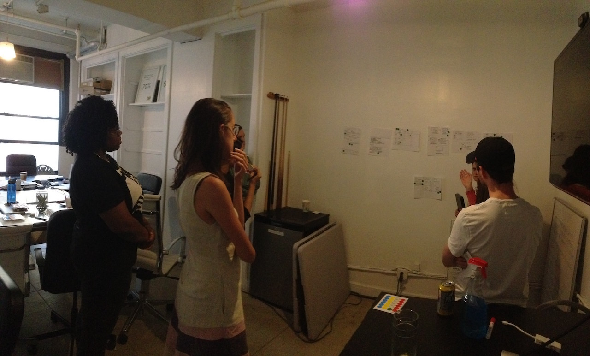 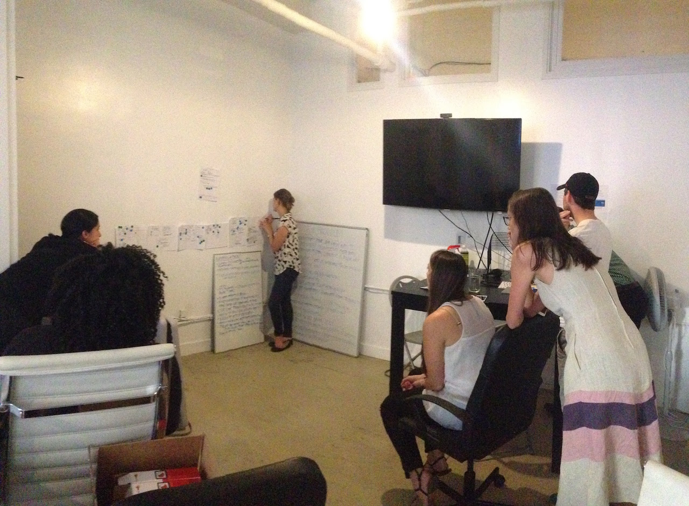We also started recruiting participants who would test our prototype and schedule them to come in to the office by end of week. By doing this, we force ourselves to build something that a user can interact with and not get too caught up in the visual polish which would likely be changed anyway.
Creating storyboards and flushing out the user flow
We decided we would go all-in on one solution by taking the core idea combined with other ideas that stood out. We would start storyboarding the create and debate a very rough user flow that would give us a starting point of how we would build our prototype. We create a basic opening scene (job page) and end scene (post-submission) and focus on main parts of the application that we wanted to change and address.
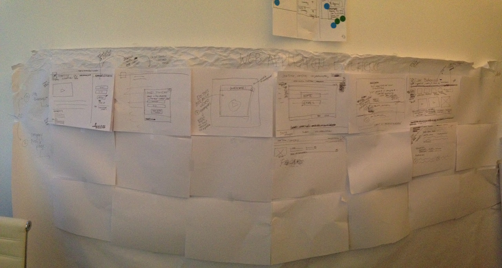We would start making each story more detailed combined with context.
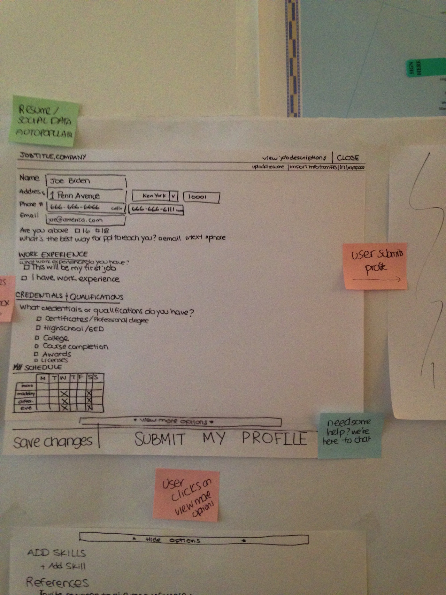And soon enough we would have a full storyboard from start to finish that we can then create into a prototype in Sketch.

Prototyping and coming up with test questions
By virtue of the time remaining, we could only afford to make a barebones prototype. But as long as it communicated core ideas, and we could figure out how users would react to them, and how we could make it better, we would be on a decent route. The goal is not to create a fully fleshed out high-fidelity product, but to discover how the solutions we found would turn out.
Some of the first pages we designed:
Job Page

Profile Section
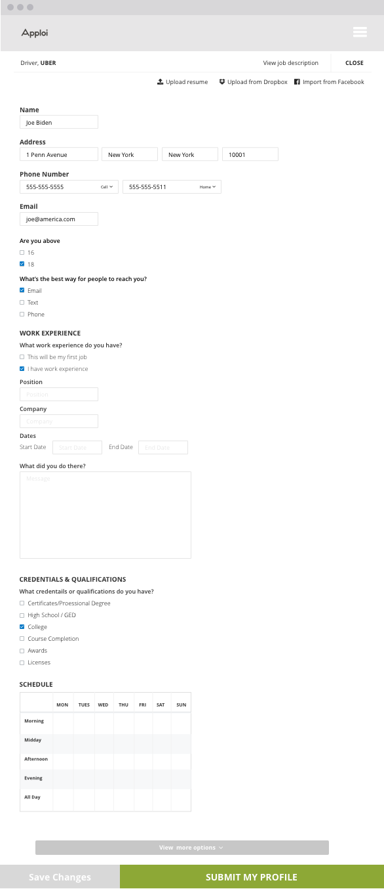Employer question modal
Below is one of the ideas that came out from the sketches. If we were to transpose a modal with its own navigation and icons, would users be able to understand it? Would they answer the questions? This is obviously very rough, but at least we would get some early feedback to test varying hypotheses.

Aside from usability, we also had to craft non-guiding questions that would help us find out more about how users interact with the product.
Rapid Iteration and User Testing
Friday came and we tested the prototype. We had five users scheduled to test 30 minutes apart. After each test, we would employ rapid iteration, or fix parts we thought was broken or could be improved from each version. We wouldn’t necessarily fix major processes, but the goal was to make the prototype smoother per iteration so that we could get a better grasp of how the core solution performed after each test. By doing so, we create a more honest prototype and one we could asses easier, especially after reviewing the tests as a team afterwards.
A lot of things were addressed during the tests. We figured out that having a modal on top of the profile, wasn’t necessarily the best solution but there was something to the icons and the navigation. It wasn’t perfect and needed improvement, but each test revealed that we were onto something with regards to this idea.
Other major versions
We moved up on the fidelity ladder and started carving out the insights from the initial tests. We then continued testing each one until it was clearer that users had a more effective time navigating questions and actually finishing applications.
Again, these were rough visual-wise as we were still testing out the core ideas.
Version 2
 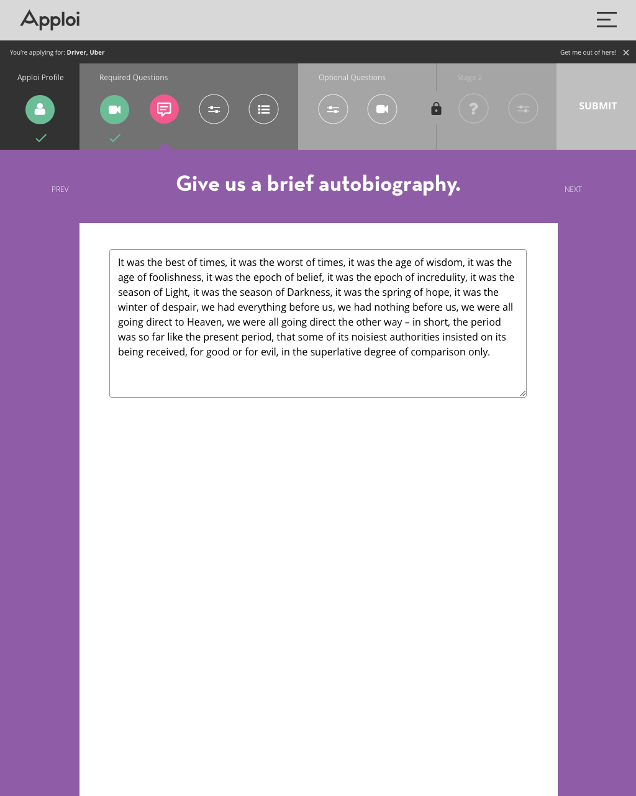
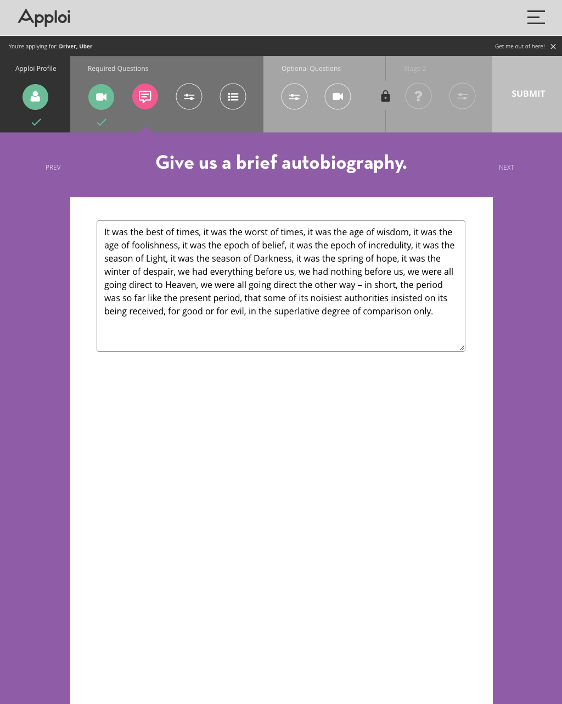

Version 3
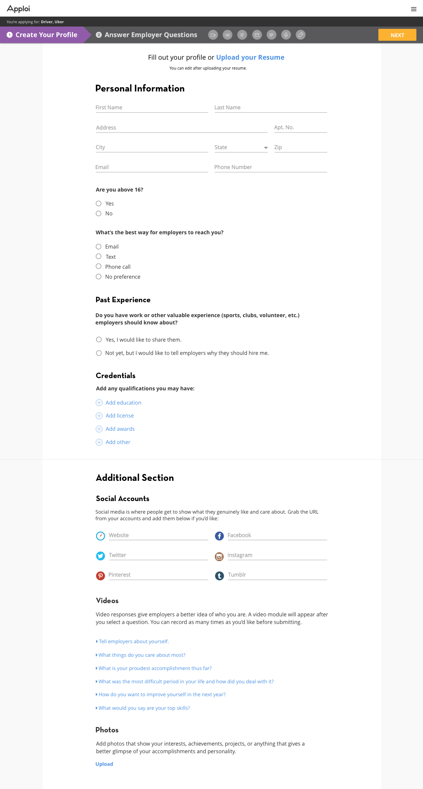 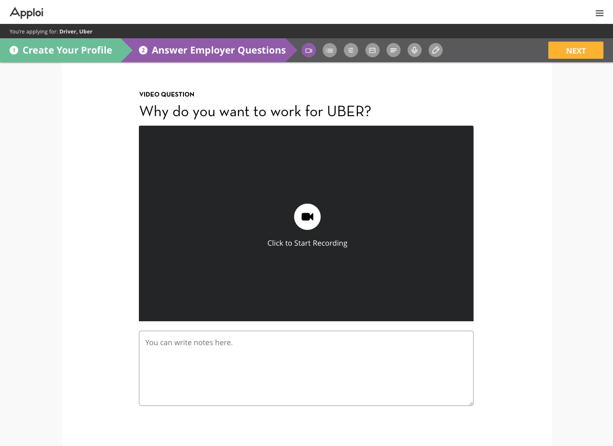 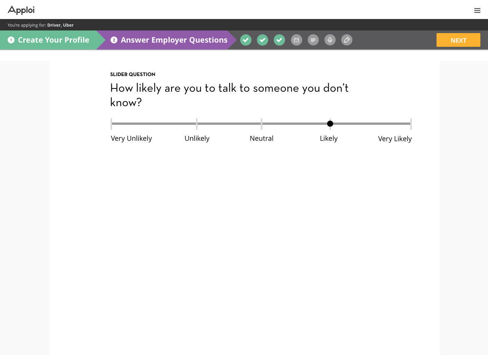
Increasing confidence and compiling into one solution
Eventually, after continuous testing of multiple kinds (in-office and remote with both new and existing users), we started to inch closer to an application that was closer to our initial goal.
We opted to create a one pager, with the navigation idea—which we would call the Job DNA— that allows users to track their progress, jump to questions, and answer seamlessly. If for whatever reason they wanted to do the application at a later time, we would provide mechanisms in the prototype that would help with that. But generally, we wanted an application where people can easily fill out their profile, answer employer questions, and submit in one go. We can’t control every scenario, but we wanted the end product to enable this kind of pattern, and something that can be clearly proven by data.
New Job Page
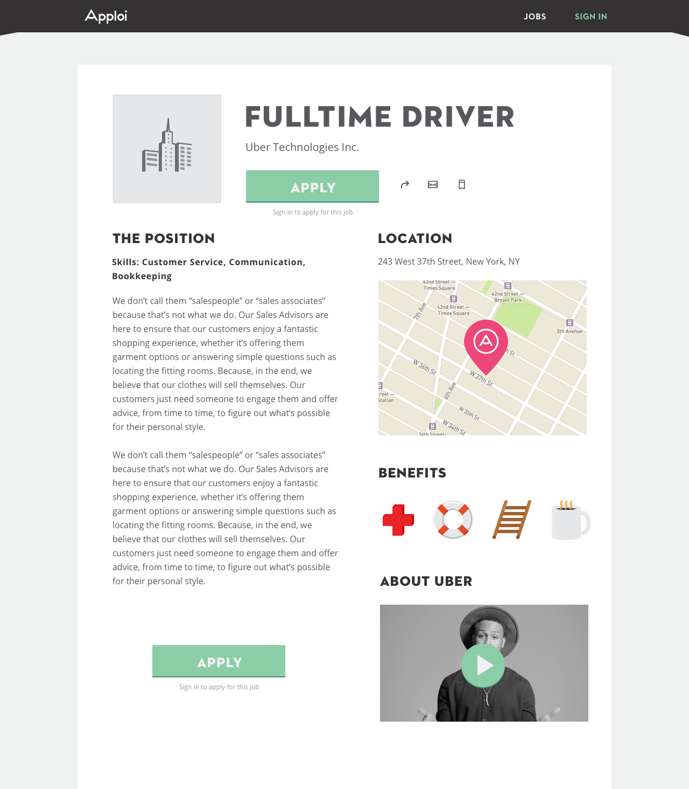New Application Form
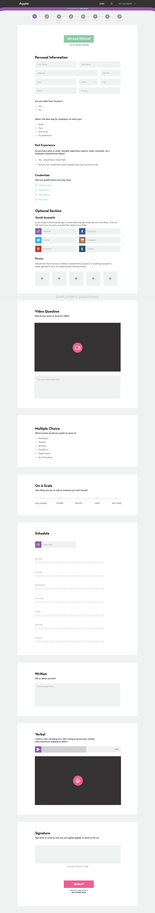Profile and Employer Questions Filled

Our creative director also started to determine the patterns we were using for this project and started to enhance our existing design language (called Roosevelt), and build out our UI toolkit for the consumer side.
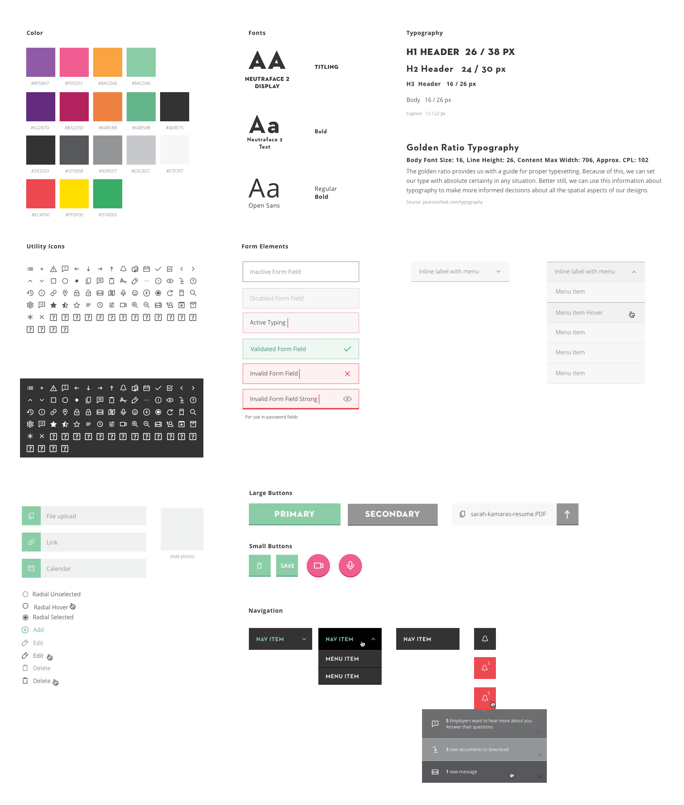This would be the beginning stages of Project Churchill to be shipped.
Conclusion
The design sprint definitely helped because it gave us a starting point of which problems to address, and how we could start creating a better application process that would equally serve both business and user needs. While a lot of our early hypotheses were invalidated through user testing, this actually gave us the most insight into which ideas were working most, and which ones to remove or make better. By virtue of iterating and testing over and over again, we gained more confidence into how to craft a better product and that we were heading for a good direction.